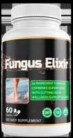

Fungus Elixir Scam or Legit? The Shocking Truth Exposed (2026 Review)

Click Here to Check Official Batch Availability →| Product Name: | Fungus Elixir |
| Editorial Score: | 4.8 / 5.0 ⭐⭐⭐⭐⭐ |
| Primary Purpose: | Targeted Bioactive Health & Vitality Formula (Natural Health & Dietary Supplement) |
| Manufacturing / Delivery: | c-GMP Certified, FDA-Registered Facility (USA) |
| Guarantee Shield: | 100% Risk-Free Money-Back Guarantee |
| Official Portal: | Verified Direct Manufacturer Website → |
Fungus Elixir Reviews
Fungus Elixir Reviews Update: Fungus Elixir is a natural supplement formulated to support immune function, combat fungal infections, lessen inflammation, and promote overall health and vitality.
What Is Fungus Elixir?
Fungus Elixir is a natural remedy often used in alternative medicine to support immune health and promote overall wellness.
It is typically made from a blend of medicinal mushrooms, herbs, and other botanicals, known for their potential to fight infections, lessen inflammation, and maximize the body’s natural defenses.
The elixir is believed to help detoxify the body, enhance energy levels, and improve skin health by combatting fungal infections and balancing internal microbiomes.
People may turn to Fungus Elixir for chronic conditions like yeast infections, athlete’s foot, and other fungal imbalances, or as a preventive health tonic.
It is commonly used in liquid form, making it easy to incorporate into daily routines.
How Does It Work?
Fungus Elixir works by utilizing its antifungal, immune-boosting, and anti-inflammatory properties to support the body’s natural defense mechanisms.
It helps fight fungal infections by inhibiting the growth of harmful fungi, such as yeast and molds, reducing symptoms like itching and irritation.
Additionally, the elixir supports immune function, enhancing the body’s ability to combat infections and maintain balance in the microbiome.
By promoting a healthy balance of microorganisms, it helps prevent fungal overgrowth. The anti-inflammatory effects also soothe irritation, improving comfort and overall health.
Through these combined actions, Fungus Elixir promotes wellness and helps manage fungal infections.
=>Click To Learn Everything About The Ingredients Used In Fungus Elixirs…
Fungus Elixirs Ingredients
Fungus Elixirs typically include a variety of natural active components known for their antifungal, immune-boosting, and healing properties. Some common active components found in these elixirs are:
Vitamin C (Ascorbic Acid, 30 mg, 50%)
- Vitamin C is a powerful antioxidant that supports immune health by enhancing the function of immune cells.
- It helps protect cells from oxidative stress and can support the body’s defense against infections.
- It also plays a role in collagen formation and skin health, making it beneficial for repairing damaged tissues, which may be important for fungal infections that affect the skin.
Vitamin E (d-Alpha Tocopherol Succinate, 30 IU, 100%)
- Vitamin E is a potent antioxidant that protects cells from damage caused by free radicals. It also plays a critical role in immune function and skin health.
- In the context of fungal infections, Vitamin E’s anti-inflammatory properties can help reduce the irritation and discomfort often associated with these conditions.
Selenium (20 mcg, 29%)
- Selenium is an essential mineral with antioxidant properties that helps support the immune system.
- It enhances the action of other antioxidants in the body, protecting cells from damage.
- Selenium also plays a role in thyroid function, which can indirectly influence immune health and inflammation.
Graviola Leaf Powder (Annona muricata, 200 mg)
- Graviola, also known as soursop, has long been used for its purported antimicrobial and anti-inflammatory effects.
- It is believed to have natural compounds that may help fight bacterial, viral, and fungal infections.
- Its potent antioxidant properties also help support the immune system by neutralizing harmful free radicals in the body.
Raspberry Fruit Powder (200 mg)
- Raspberries are high in antioxidants, including vitamin C and polyphenols, which help strengthen the immune system and protect cells from damage.
- They may also have anti-inflammatory properties that could soothe the skin and reduce irritation caused by fungal infections.
Green Tea Leaf Extract (200 mg, 40% extract)
- Green tea contains powerful polyphenols, such as EGCG (epigallocatechin gallate), which are known for their antifungal, antiviral, and antibacterial properties.
- These compounds help fight infections and protect cells from oxidative damage. Green tea may also help reduce inflammation and support overall immune function.
Turmeric Rhizome Powder (100 mg)
- Turmeric contains curcumin, a compound with well-known anti-inflammatory, antioxidant, and antimicrobial properties.
- It helps reduce inflammation and supports immune health. In the context of fungal infections, turmeric can assist in alleviating symptoms such as skin irritation or internal inflammation.
Beta-Glucan Powder (100 mg)
- Beta-glucan is a naturally occurring polysaccharide found in the cell walls of fungi, yeasts, and some plants.
- It is renowned for its ability to stimulate the immune system, enhancing the body’s ability to fight off infections.
- Beta-glucans are believed to help modulate the immune response, making them effective in supporting the body’s defense against fungal overgrowth.
Cat’s Claw Bark Powder (20 mg)
- Cat’s Claw, a plant native to the Amazon rainforest, is often used to reduce inflammation and boost the immune system.
- It contains compounds that are believed to help fight infections, including fungal infections.
- Cat’s Claw has also been linked to digestive health and may help balance gut microbiota, which is important for preventing fungal overgrowth in the gut.
Garlic Bulb Powder (20 mg)
- Garlic has long been used for its antifungal, antibacterial, and immune-boosting properties.
- It contains allicin, a sulfur compound that is known for its ability to fight infections, including fungal ones.
- Garlic also has a natural ability to support the cardiovascular system, reduce inflammation, and enhance overall immunity.
Panax Ginseng Root Powder (20 mg)
- Panax ginseng is a well-known adaptogen that helps the body cope with stress while boosting energy levels and supporting immune function.
- Ginseng has been shown to enhance the body’s resistance to infections, including fungal infections, by modulating immune responses.
Lycopene (2 mg)
- Lycopene is a carotenoid found in tomatoes and other red fruits. It is a potent antioxidant that can protect cells from oxidative damage.
- Lycopene has anti-inflammatory and immune-enhancing effects, which may help the body defend against fungal infections and promote overall health.
Quercetin (50 mg)
- Quercetin is a flavonoid that has powerful antioxidant and anti-inflammatory properties.
- It is believed to help modulate the immune system and reduce symptoms of fungal infections, such as irritation and inflammation.
- Quercetin may also improve the body’s ability to fight infections by enhancing the immune response.
Pine Bark Extract (100 mg, 95%)
- Pine bark extract is rich in proanthocyanidins, which are antioxidants that help protect cells from damage and reduce inflammation.
- This extract also has immune-boosting properties, helping to fight infections, including fungal overgrowth, and improving overall skin health.
Grape Seed Extract (100 mg, 95%)
- Grape seed extract is a potent antioxidant known for its ability to protect cells and blood vessels from oxidative stress.
- It supports the immune system and may help fight fungal infections. Additionally, it has anti-inflammatory properties that can assist in reducing symptoms of fungal-related conditions.
Pomegranate Extract (50 mg, 40%)
- Pomegranate is a powerful antioxidant that has been shown to have antifungal, antibacterial, and antiviral properties.
- It can help protect the body from infections, reduce inflammation, and support the immune system.
- Pomegranate extract may also contribute to skin health, which is important when dealing with external fungal infections.
Herbal Complex (100 mg)
- The herbal complex often includes a blend of herbs with antimicrobial, antifungal, and immune-boosting properties.
- These herbs work synergistically to support the body’s ability to fight infections and promote general wellness.
Mushroom Complex (80 mg)
- The mushroom complex likely includes medicinal mushrooms such as Reishi, Shiitake, or Maitake.
- These mushrooms contain beta-glucans and other compounds that support immune function, have antifungal properties, and help reduce inflammation.
- They are often used to combat infections and promote overall health.
Arabinogalactan (20 mg)
- Arabinogalactan is a fiber derived from the larch tree that helps stimulate immune function.
- It can support the body’s natural defenses, enhancing the immune response to infections, including fungal overgrowth.
Olive Leaf Extract (50 mg, 15%)
- Olive leaf extract contains oleuropein, a compound known for its antifungal, antibacterial, and antiviral properties.
- It has been shown to help fight infections, boost immune function, and reduce inflammation.
- Olive leaf extract is particularly effective in helping the body fight systemic fungal infections.
Overall, this formula is formulated to provide broad-spectrum support for fighting fungal infections, boosting immune health, reducing inflammation, and promoting general wellness.
The blend of antioxidants, antifungal agents, and immune-enhancing compounds makes this supplement a high-potency tool in managing fungal overgrowth and maintaining overall health.
Fungus Elixirs Benefits
- You will have better immune system function.
- Your body’s ability to fight off fungal infections will improve.
- Your inflammation levels will be reduced.
- Your skin will feel more comfortable and less irritated.
- You will experience fewer fungal flare-ups.
- Your energy levels will become more consistent throughout the day.
- Your body’s natural detoxification processes will be supported.
- Your cardiovascular health may be enhanced.
- Your overall immune resilience will be strengthened.
- Your stress levels may decrease due to adaptogenic ingredients.
- You will have a reduced risk of chronic infections.
- Your cognitive function will improve, with better focus and concentration.
- Your joint health will benefit from reduced inflammation.
- Your blood sugar balance may improve, supporting overall metabolic health.
- Your mood will feel more stable and balanced.
- Your muscle recovery and strength may improve.
- Your liver health may benefit from detoxifying properties.
- You will experience enhanced overall vitality and well-being.
Who can use the Fungus Elixir?
Fungus Elixir can be used by a wide range of customers, particularly those dealing with fungal infections like athlete’s foot, candida overgrowth, or nail fungus.
It is also beneficial for people with weakened immune systems, chronic inflammation, or digestive issues, as its active components support immune function, lessen inflammation, and help balance gut bacteria.
Those looking to enhance their overall wellness, improve energy levels, or detoxify may also find it helpful, as the elixir promotes vitality and supports liver function.
Additionally, customers experiencing stress or those seeking antioxidant protection to maintain skin health and fight aging can benefit from its adaptogenic and antioxidant properties
What is the recommended dosage of Fungus Elixir?
The recommended dosage of Fungus Elixir is typically 1 to 2 capsules per day, taken with a meal. For optimal results, it is advised to use the supplement consistently for at least 30 days.
This regular intake helps support the immune system by enhancing its ability to fight off fungal infections, lessen inflammation, and promote overall wellness.
The combination of active components works synergistically to improve immune function, support digestive health, and provide detoxifying benefits.
Adhering to the recommended dosage allows for the best chance at experiencing the supplement’s full range of benefits, including better energy levels, enhanced skin health, and improved overall vitality.
It’s important to take the supplement daily as part of a balanced routine for long-term benefits.
When to expect the results?
The time it takes to see results from using Fungus Elixir can vary depending on individual health conditions, the severity of the fungal infection, and overall lifestyle factors.
Typically, most users may start to notice initial benefits such as improved energy, better immune function, and reduced inflammation within 2 to 4 weeks of consistent use.
For more substantial improvements, such as relief from fungal infections or digestive health support, it may take 4 to 8 weeks of regular use.
Consistency is key, and it’s important to follow the recommended dosage and give the supplement time to work. For best results, consider using Fungus Elixir as part of a healthy diet and lifestyle.
How much does the Fungus Elixir cost?
The price of Fungus Elixir can vary depending on the brand, packaging, and where it is purchased.
- One Bottle: You can buy one bottle of Fungus Elixir for just $69 today.
- Three Bottles: You can buy three bottles of Fungus Elixir for just $177, which is $59 per bottle today. (Most Popular) (Click to Order Now)
- Six Bottles: You can buy six bottles of Fungus Elixir for just $294, which is $49 per bottle today. (Best Value)
If you subscribe for monthly orders or more, you can receive additional discounts and enjoy free shipping and handling for all orders over $100.
Final Verdict
Fungus Elixir is a promising supplement for customers seeking to support immune function, combat fungal infections, and improve overall well-being.
With its combination of antifungal, anti-inflammatory, and antioxidant properties, it can help lessen inflammation, maximize immune defense, and enhance energy levels.
The supplement may also support skin health, digestive function, and detoxification.
Available in flexible purchasing options, including single, three-bottle, and six-bottle packages, it offers a cost-efficient way to incorporate the supplement into your routine.
For those looking to manage fungal infections or maintain overall health, Fungus Elixir may provide substantial benefits with consistent use.
Frequently Asked Questions
Can Fungus Elixir help with skin conditions?
Yes, by reducing fungal overgrowth and inflammation, Fungus Elixir may help with skin conditions like eczema, athlete’s foot, and other fungal-related skin issues.
Will I need to change my diet while taking Fungus Elixir?
While no specific diet is required, a healthy, balanced diet free of excess sugars and processed foods may enhance the effectiveness of the supplement.
Is Fungus Elixir suitable for vegetarians?
The formula contains natural plant-based active components, but the capsules are made of gelatin (bovine). If you follow a vegetarian diet, check for alternative options.
Fungus Elixir, Fungus Elixir reviews, fungus eliminator ingredients, fungus nail, fungus on skin, fungus treatment, elixir serum, elixir meaning, Fungus Elixir ingredients, Fungus Elixir reviews and complaints, Fungus Elixir consumer reports, Fungus Elixir cost
Fungus Elixir, Fungus Elixir reviews, fungus eliminator ingredients, fungus nail, fungus on skin, fungus treatment, elixir serum, elixir meaning, Fungus Elixir ingredients, Fungus Elixir reviews and complaints, Fungus Elixir consumer reports, Fungus Elixir cost
Fungus Elixir, Fungus Elixir reviews, fungus eliminator ingredients, fungus nail, fungus on skin, fungus treatment, elixir serum, elixir meaning, Fungus Elixir ingredients, Fungus Elixir reviews and complaints, Fungus Elixir consumer reports, Fungus Elixir cost
..